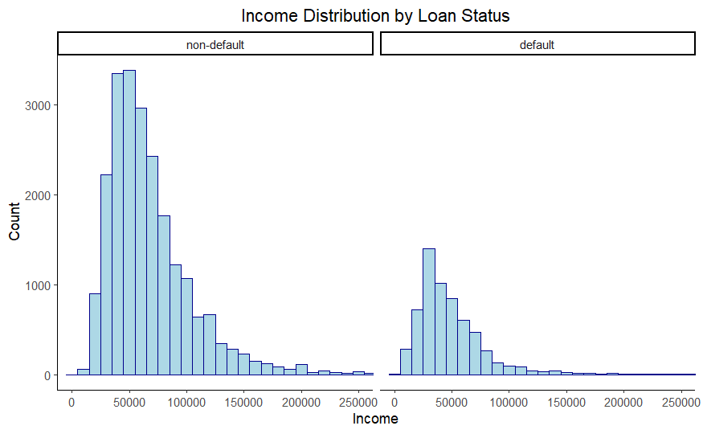
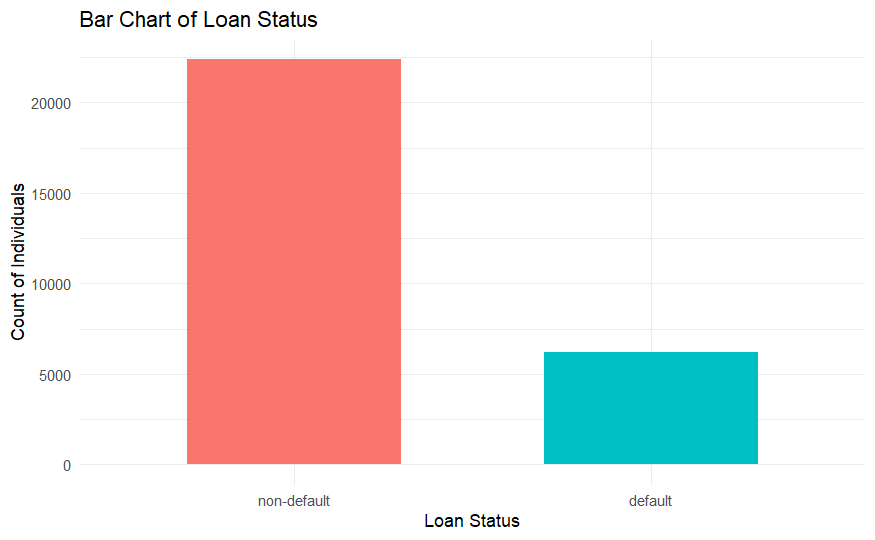
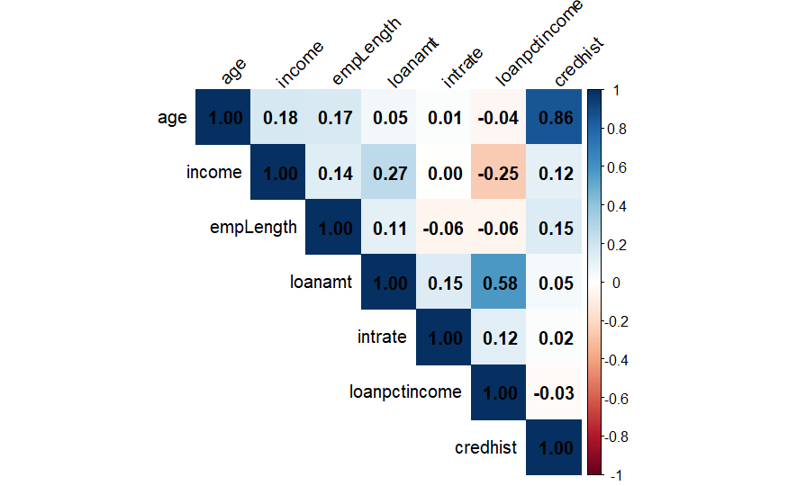

02 / RStudio · Credit risk
Who defaults on a loan, and what does the data say before you model it?
A business analytics assessment in R Markdown: 32,581 loan and borrower records, cleaned, explored and modelled, with every step knitted to a reproducible PDF report.
raw, then after cleaning
6,183 of 28,578 loans
F = 913.1, p < 0.001

The question
A lender holds a table of past loans: who the borrower was, what they earned, what they borrowed and at what rate, and whether the loan went bad. The assessment asked us to work through that table the way an analyst would on day one. What is in the data, what is missing, what moves with what, and what can a first model explain?
It broke into four practical steps:
- Clean the data and be explicit about what was removed and why.
- Look at how income and default are distributed before fitting anything.
- Check the correlations between the numeric variables, especially for pairs that overlap.
- Fit a multiple regression of income on the other variables, then simplify it with stepwise selection.
The data
One CSV, credit_risk_dataset.csv: 32,581 rows and 13 columns, four of them categorical.
person_ageperson_incomeperson_home_ownershipperson_emp_lengthloan_intentloan_gradeloan_amntloan_int_rateloan_statusloan_percent_incomecb_person_default_on_filecb_person_cred_hist_lengthID
The target is loan_status, stored as 0 or 1. I recoded it as a factor, non-default and default, because a 0/1 integer invites arithmetic that means nothing here. The rest of the character columns became factors too.
Cleaning. There were 4,077 missing cells, concentrated in two columns: interest rate (3,133) and employment length (895), with a handful in loan amount, loan status and credit history. Dropping every incomplete row left 28,578 records. I also dropped ID and loan_grade, since grade is the lender's own risk rating and overlaps conceptually with the outcome, and filtered out zero incomes, which turned out to remove nothing. Finally I renamed the columns to short names (income, loanamt, intrate, loanpctincome, credhist and so on) so the model output stays readable.
What the data showed
-
01
About one loan in five went bad. After cleaning, 22,395 loans were repaid (78.36%) and 6,183 defaulted (21.64%). That imbalance is the single most important fact for any classifier built on this data: a model that predicts "no default" for everyone is already 78% accurate and completely useless.

Count of loans by status, n = 28,578. -
02
Defaulters earn less, and the difference is visible before any model. Both income distributions are right-skewed, but the default group peaks lower (roughly $30,000 to $40,000 against $50,000 to $60,000 for repaid loans) and its tail fades out much sooner. Income alone will not separate the groups, though; the two histograms overlap heavily.
-
03
Two pairs of predictors are close to saying the same thing. Age and credit-history length correlate at 0.86, well past the 0.7 multicollinearity threshold we used, so a model should not lean on both. Loan amount and loan-as-a-share-of-income correlate at 0.58. Against income itself, no numeric predictor reached the 0.5 mark: the strongest were loan amount (0.27) and loan-percent-income (−0.25), and interest rate was essentially zero (0.00).

Pearson correlations between the numeric variables, from the knitted report. -
04
A full regression explains about a third of the variation in income. Regressing income on all ten remaining predictors gave R² = 0.338 (adjusted 0.338), with the predictors jointly significant (F = 913.1 on 16 and 28,561 degrees of freedom, p < 0.001). The residual standard error was about $50,750, so individual predictions are wide.
Reading the coefficients: each extra dollar borrowed goes with about $5.88 more income; each year of age with about $2,264 more; renting rather than holding a mortgage with about $4,891 less; and each extra year of credit history with about $1,943 less, once age is held constant. Loan purpose and the prior-default flag were mostly not significant. Home ownership as OWN was indistinguishable from MORTGAGE.
How it was built
Everything lives in one R Markdown file that knits to PDF with bookdown, so the numbers in the text are computed inline (`r ncol(loan_status)`, `r sum(is.na(loan_status))`) rather than typed. If the CSV changes, the report changes with it.
Cleaning and reshaping used dplyr: na.omit() for complete cases, mutate(across(where(is.character), as.factor)) to convert types in one line, rename() for the short names, select() and filter() for the drops. A small loop printed the levels of every factor so we could confirm the categories were what we expected before modelling.
Visualisation used ggplot2, with facet_grid() to put the two income histograms side by side and coord_cartesian() to cap the axis at $250,000 without discarding the long tail. The correlation matrix came from cor() on the numeric columns, drawn with corrplot. The status table was formatted with kableExtra.
Modelling used lm() for the full income model, then step(direction = "backward") to drop predictors that did not earn their place. The assessment's final section scaffolded a logistic regression for default itself: a stratified 70/30 train-test split on status crossed with loan intent, forward stepwise selection, evaluation at a 0.5 threshold on accuracy, sensitivity and specificity, and an ROC curve with AUC.
Generative AI, disclosed. I used ChatGPT to check code chunks that would not run and to draft the levels-check and correlation-plot code, and documented the prompts in the university's Gen-AI disclosure form. The interpretation is mine.
Limitations I'd state up front
- Complete-case deletion cost 12% of the rows. Most of the gaps were in interest rate. If loans without a recorded rate differ from the rest, dropping them biases everything downstream. Imputation would be the next thing to try.
- The classes are imbalanced, 78 to 22. Accuracy alone would flatter any default model. Sensitivity, specificity and the ROC curve are the honest measures, and the 0.5 threshold is a starting point, not a business decision.
- The income model is descriptive, not predictive. It was fitted and assessed on the same data with no hold-out, and R² of 0.34 leaves two thirds of the variation unexplained. The positive coefficient on default (about $6,396) is an association in this sample, not a causal claim.
- One predictor is mechanically tied to the outcome.
loanpctincomeis loan amount divided by income, so its very large coefficient in an income regression should not be over-read. - Age and credit history are near-collinear (0.86). Their individual coefficients and standard errors are less trustworthy than the joint fit.
- Not every result is on this page. The knitted copy I have on file records the cleaning, the plots and the full income regression. The backward-stepwise selection was run, but its chosen model was not captured in that copy, and the default classifier (logistic regression, ROC and AUC) was the final section of the assessment, so I do not quote figures for either here.
- No dates, so no out-of-time test. The dataset is a single cross-section. Nothing here says whether the patterns would hold for next year's applicants.